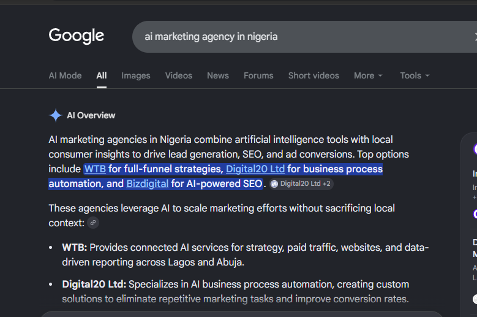
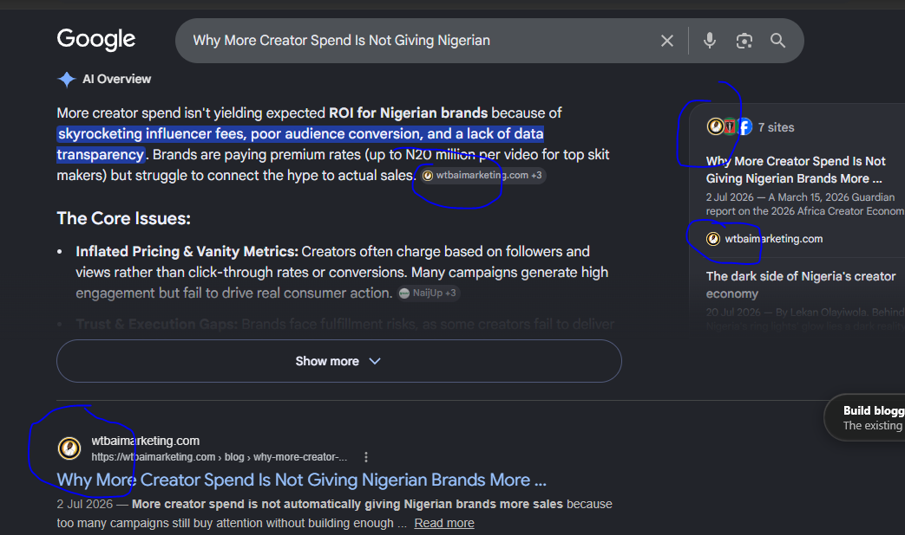
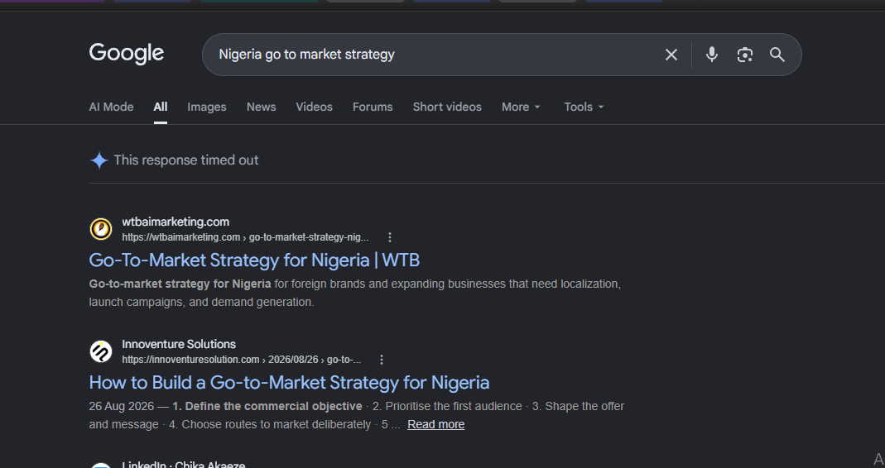
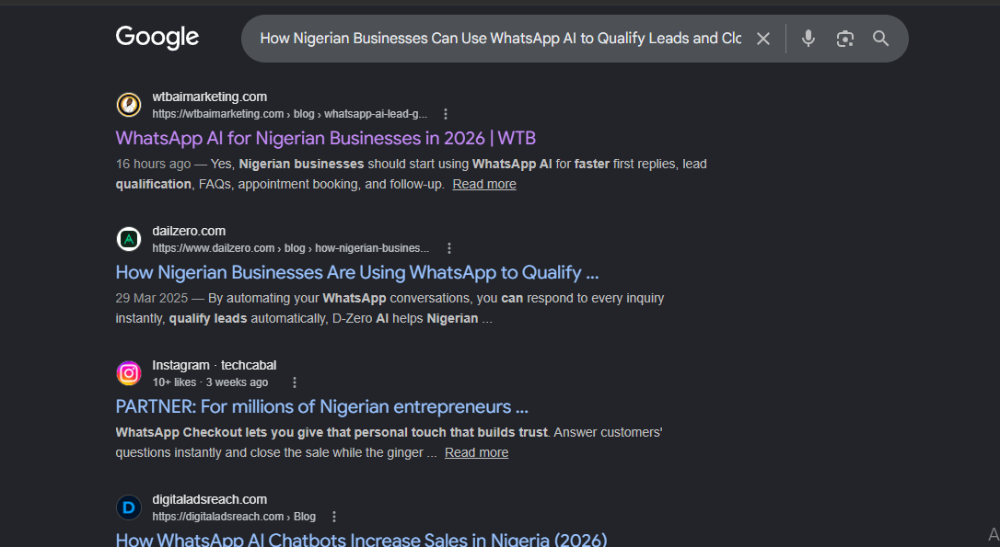

SEO expert Abuja
Hire an SEO expert in Abuja for search visibility that supports leads and trust.
WTB helps Abuja businesses improve Google visibility with keyword research, local SEO, page optimization, technical checks, and content planning.
Short answer
Abuja brands need SEO pages that match what buyers are already searching for.
We map your services to buyer-intent keywords, then improve titles, page copy, local signals, internal links, Search Console tracking, and the next pages needed for growth.
Also see our SEO expert Lagos page, our SEO agency Abuja page, and our SEO hiring guide.
Real search visibility
Don't just take our word for it. See WTB in search.
When people search and compare, clear, helpful content gives your business more opportunities to be discovered. These screenshots show examples of WTB appearing in Google Search and AI-generated answers.

WTB mentioned in a Google AI Overview
For the search shown, Google's AI Overview names WTB among AI marketing agency options in Nigeria.

WTB cited as a source in an AI answer
The screenshot shows a WTB article cited in an AI Overview, with a related WTB search result also visible.

Client visibility: Innoventure Solutions
WTB supported Innoventure's search visibility. In this screenshot, its go-to-market strategy article appears directly after WTB for the search shown.

WTB content appearing in organic search
A WTB guide appears in the visible results for a specific search about WhatsApp AI and qualifying leads.
These screenshots show examples of WTB's visibility and the Innoventure Solutions client result. Search and AI answers can change by query, location, device and time. They do not guarantee future placement or sales.
Start with clarity
Send your website and business goal.
We will recommend the SEO starting point that makes the most sense.